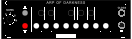

Introducing the Nocturne Alchemy Platform – a flexible eurorack module series that redefines versatility and creativity. Each module within the Nocturne Alchemy Platform shares the same robust Arduino-based hardware, allowing you to effortlessly swap functionalities through our intuitive web firmware loader. By purchasing one module, you gain access to the full range of available firmwares, including our current creations, Slight of Hand and Arp Of Darkness as well as others that are planned for future release! This innovative approach means your module can evolve with your music, with new and exciting functionalities just a simple firmware update away. Embrace the magic of endless possibilities with the Nocturne Alchemy Platform.
This is a firmware uploader for Nocturne Alchemy Platform modules such as Slight Of Hand and Arp Of Darkness. It only works in Chrome on a Mac or PC. You will need a USB-A to USB Mini cable. If you don't have one laying around, you can find many inexpensive ones on Amazon
Read through all the steps below before you update the firmware.
A 1U (Intellijel format) Eurorack module that functions as a monophonic CV keyboard. It's designed to be extremely playable with responsive, light-touch, tactile switches for keys, a wide portamento/slew range which is adjustable in real-time, as well as octave up and down buttons for maximum performance in a small package.
Patch Notes - This patch optimizes EEPROM usage by detecting and converting the existing calibration data from float to integer. This opens up more space in the EEPROM for upcoming firmwares to use for data storage.
This patch also officially releases the firmware as an open source starter template for those who wish to develop their own firmware for the Nocturne Alchemy Platform. Documentation and code available here: Slight Of Hand GitHub Repository

The Arp Of Darkness is a 1U (Intellijel format) Eurorack module designed to create dynamic and evolving note sequences. Unlike traditional arpeggiators, which typically play chords as individual notes in a predefined pattern, this module allows you to enter notes sequentially into a buffer of variable length, from 3 up to 16 notes.
Patch Notes - This patch optimizes EEPROM usage by detecting and converting the existing calibration data from float to integer. This opens up more space in the EEPROM for upcoming firmwares to use for data storage.
This patch also addresses the "hesitation" that some users experienced when simultaniously pressing the octave up and octave down buttons in order to cycle through playback modes. Now the user simply taps the octave up and octave down buttons at the same time, and the playback mode will cycle to the next mode on the next incoming clock/gate, creating a more predictable user experience.
Very special thanks to: https://github.com/dbuezas/arduino-web-uploader for making the updater code.